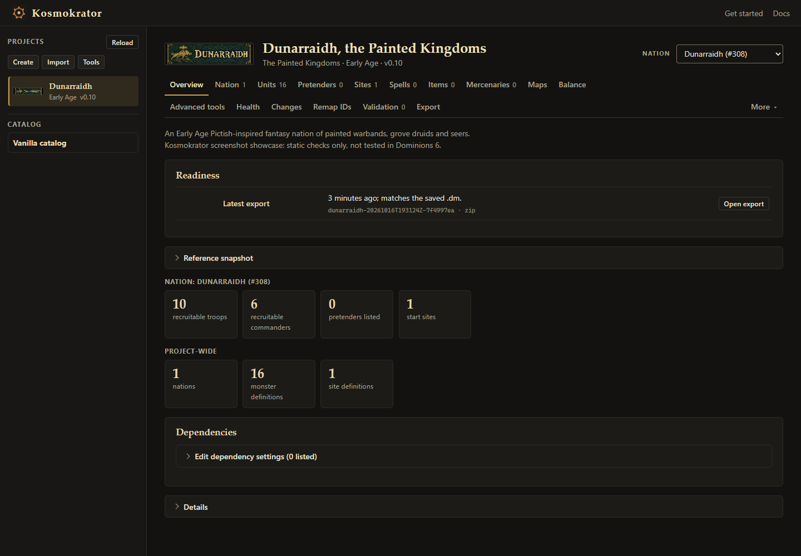
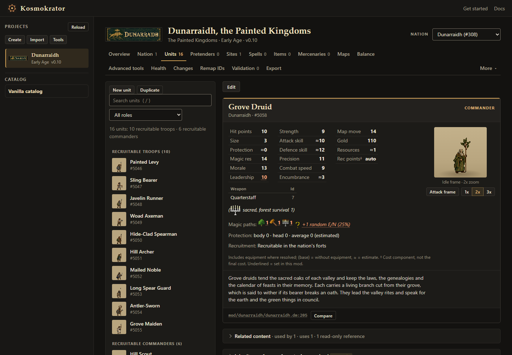
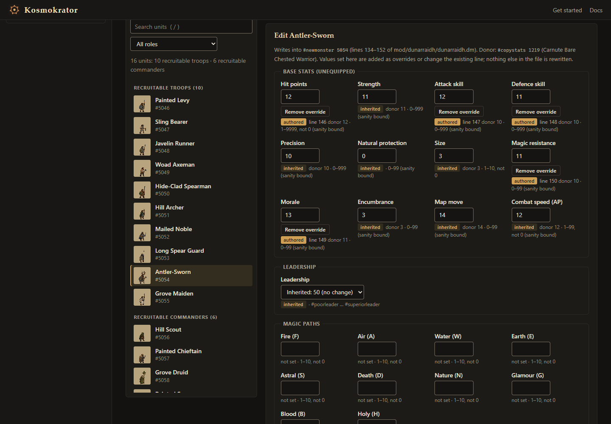
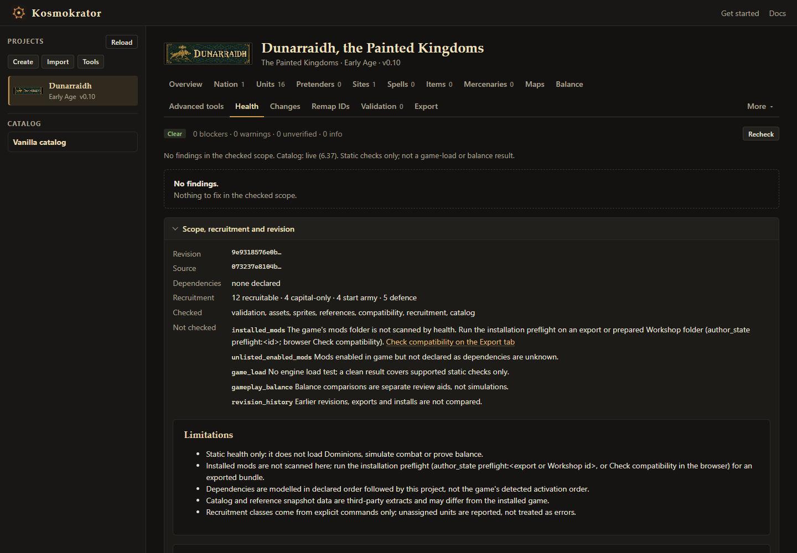
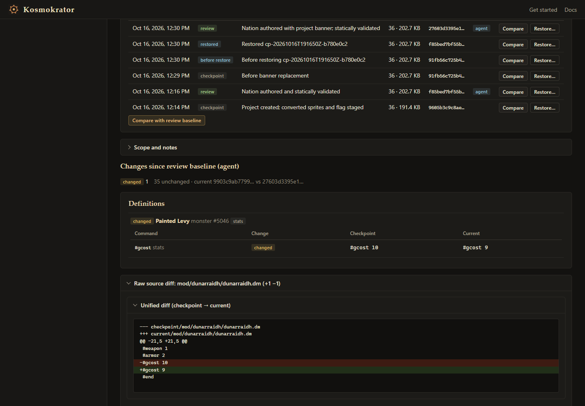

Kosmokrator
Dominions 6 / Modding tool
Kosmokrator is an agent-assisted modding tool for Dominions 6. Describe a nation or map, and Kosmokrator prepares instructions and project files for your coding agent. The agent creates the content; Kosmokrator's local browser interface lets you review it, make supported edits, check it and export it.
An external agent is required. Kosmokrator does not include an AI model. AI assistance comes from an agent you run yourself, such as Codex or Claude Code, and that agent's usual subscription or API charges apply. You also need Dominions 6 to play and test what you export.
Features
- Author mods with your agent. Start a nation or a map from a short brief in the browser, then hand the generated instructions to Codex or Claude Code. A project can hold several nations and maps.
- Work with existing mods. Import a mod into a new project, inspect its contents and make supported edits.
- Browse and edit. View units, sprites and unit sheets, edit values and traits, and see inheritance, cross-mod conflicts and balance references.
- Maps are supported. The agent creates the map files, including provinces, connections, scenarios and image layers. The browser reviews maps; it is not a paint editor.
- Validate and export. Check a project's files against supported rules, then export a mod or map bundle. Edits use revisions, previews and backups. Exports go to a new destination, and regular exports do not install themselves.
Comparisons against the base game need separate reference data that you supply. The README explains how to add it.
Screenshots
These screenshots show Kosmokrator's local browser with Dunarraidh, a Pictish-inspired showcase nation made for this page. They show the review tools at work; they do not show the nation running in Dominions 6. Select an image to open it at full size.










Requirements And Getting Started
You need:
- Python 3.11 or newer.
- Access to an external coding agent such as Codex or Claude Code.
- Dominions 6, to play and test exported mods.
In short: download and extract the release source ZIP, start Kosmokrator's local browser interface from that folder, and open your agent on the same folder. Start a nation or map in the browser, give the generated instructions to your agent, then reload to review, validate and export the result.
The Kosmokrator README has the exact launch command, ports and folders, troubleshooting and optional setup. The quick start uses PowerShell on Windows; the README notes that its non-Windows instructions have not been verified on a real non-Windows system.
Downloads And Source
- Latest release: the current release files and checksums.
- README: setup, features and limits. This is the reference if anything here differs.
- Source on GitHub: original source code is licensed GPL-3.0-only. See the repository for resource and artwork terms.
Kosmokrator is an independent tool. Dominions 6 belongs to Illwinter Game Design, and game files are not bundled.